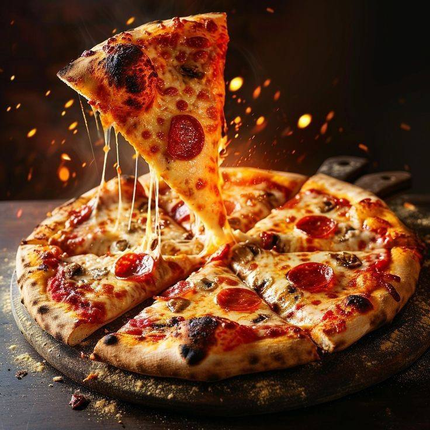

Accast is a place to experience flavors, memories, and the simple joy of cooking.
Pizza is a delicious and popular Italian dish that has become a global favorite, enjoyed in many styles and flavors. Its base is typically a thin or thick crust topped with tomato sauce, cheese (usually mozzarella), and a variety of ingredients like meat, chicken, vegetables, mushrooms, and olives. Baked in an oven, pizza can range from classic recipes to more creative, modern variations — all depending on your taste.
